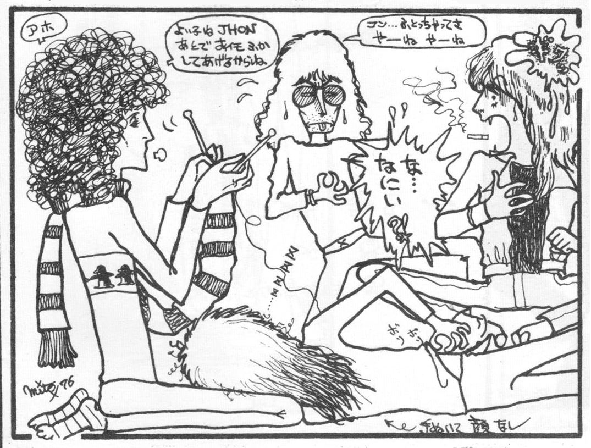
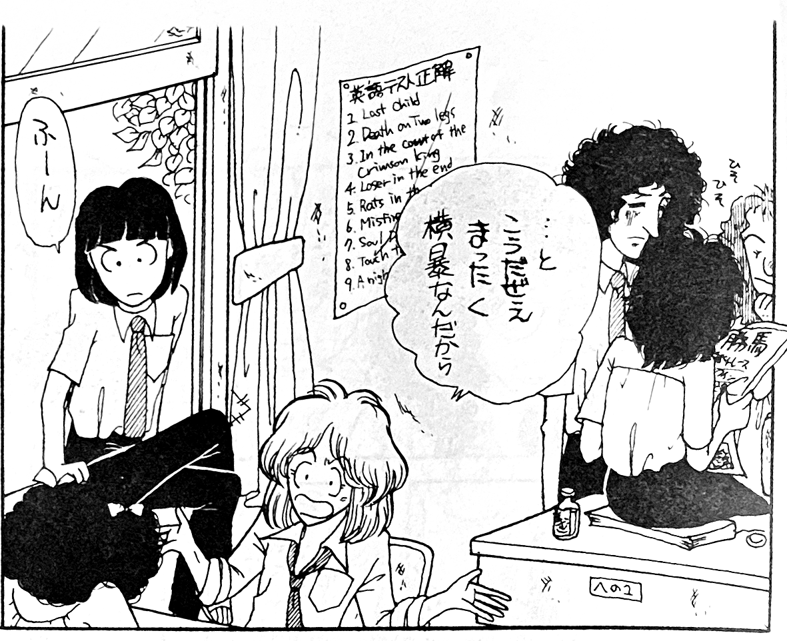
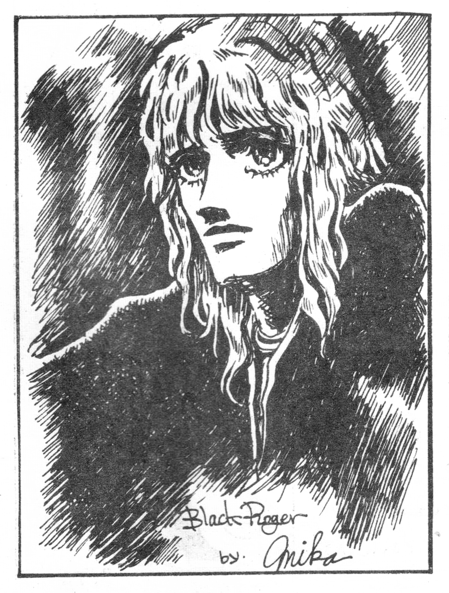
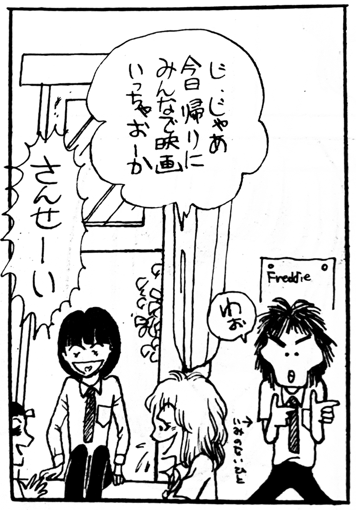

Queen III is a supplemental issue by Manken Queen, published in March of 1977. The cover illustration is done by Manken Queen head editor Shion Yoshimura and is evocative of an Aubrey Beardsley print. It contains works by future mangaka Tomoko Naka and Yuu Asagiri.
Being a supplemental issue, this volume is mostly made up of "cut illustrations", small panels that many members of the circle submitted. There is also a short story called "Aoikun, I'm in love with you!" by Makuri Shizu. The main character is modeled after Roger, with "Aoi" meaning "blue", referencing his striking blue eyes. The other members of Queen make a cameo appearance in this story as students in Aoi's classroom.
A caricature of Freddie and the bird from the Queen crest, drawn by the prolific Yuri Kitagawa, is used on the back cover. A very similar image is also used on a page calling for reader submissions.
There are a few undercurrents of BL content in Manken Queen, but it appears to be relatively tame compared to some other more explicit rock doujinshi of the time.

This is a suggestive comic. Brian calls the others morons and it's noted that the illustrator didn't draw John's face due to laziness. "John" is misspelled "Jhon" in a lot of these doujinshi; it may have been a fandom inside joke. Illustration by Mito Tajima.

Brian, John, and Freddie as students in "Aoi"'s class, standing in front of posted answers for the English exam: various rock song titles. Freddie holds what appears to be a newspaper crowning Queen as the winner of the horse races.


Student Freddie says "WOW!" and the caption notes that there's no reason for him to show up in this comic.